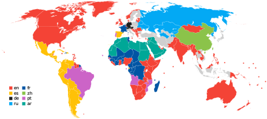
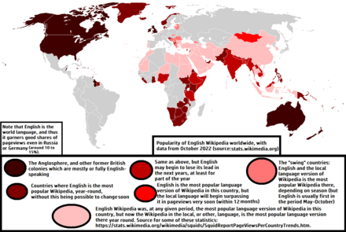
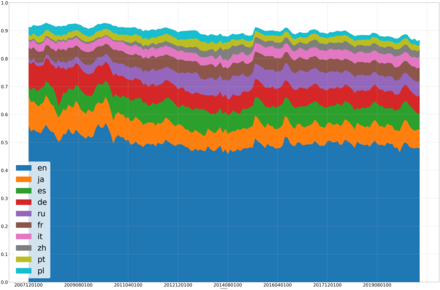

English Wikipedia
The English Wikipedia is the primary[a] English-language edition of
Wikipedia, an online encyclopedia. It was created by Jimmy Wales and
Larry Sanger on January 15, 2001, as Wikipedia's first edition.
English Wikipedia is hosted alongside other language editions by the
Wikimedia Foundation, an American nonprofit organization. Its content
is written independently of other editions[1] in various varieties of
English, aiming to stay consistent within articles. Its internal
newspaper is The Signpost. English Wikipedia is the most-read version
of Wikipedia,[2][3] accounting for 48% of Wikipedia's cumulative
traffic, with the remaining percentage split among the other
languages.[4] The English Wikipedia has the most articles of any
edition, at 6,801,178 as of March 2024.[5] It contains 10.8% of
articles in all Wikipedias,[5] although it lacks millions of articles
found in other editions.[1] The edition's one-billionth edit was made
on January 13, 2021.[6] English Wikipedia, often as a stand-in for
Wikipedia overall, has been praised for its enablement of the
democratization of knowledge, extent of coverage, unique structure,
culture, and reduced degree of commercial bias. It has been criticized
for exhibiting systemic bias, particularly gender bias against women
and ideological bias.[7][8] While its reliability was frequently
criticized in the 2000s, it has improved over time, receiving greater
praise in the late 2010s and early 2020s,[9][7][10][b] having become
an important fact-checking site.[11][12] English Wikipedia has been
characterized as having less cultural bias than other language
editions due to its broader editor base.[2]
Articles
Editors of the English Wikipedia have pioneered some ideas as
conventions, policies or features which were later adopted by
Wikipedia editions in some of the other languages. These ideas include
"featured articles",[13] the neutral-point-of-view policy,[14]
navigation templates,[15] the sorting of short "stub" articles into
sub-categories,[16] dispute resolution mechanisms such as mediation
and arbitration,[17] and weekly collaborations.[18] It surpassed six
million articles on 23 January 2020.[19] In November 2022, the total
volume of the compressed texts of its articles amounted to 20
gigabytes.[20] The edition's one-billionth edit was made on 13 January
2021 by Ser Amantio di Nicolao (Steven Pruitt) who as of that date is
the user with the highest number of edits on the English Wikipedia, at
over four million.[6] Currently, there are 6,801,178 articles created
with 914,755 files. The encyclopedia is home to 10.8% of articles in
all Wikipedias (down from more than 50% in 2003).[21][22] The English
Wikipedia currently has 47,136,589 registered accounts of which 864
are administrators.
Wikipedians

The English Wikipedia reached 4,000,000 registered user accounts
on 1 April 2007,[23] over a year since the millionth Wikipedian
registered an account in February 2006.[24] Over 1,100,000
editors have edited Wikipedia more than 10 times.[25] Over
30,000 editors perform more than 5 edits per month, and over
3,000 perform more than 100 edits per month.[26]
The English Wikipedia reached 4,000,000 registered user accounts
on 1 April 2007,[23] over a year since the millionth Wikipedian
registered an account in February 2006.[24] Over 1,100,000
editors have edited Wikipedia more than 10 times.[25] Over
30,000 editors perform more than 5 edits per month, and over
3,000 perform more than 100 edits per month.[26]

The English Wikipedia reached 4,000,000 registered user accounts
on 1 April 2007,[23] over a year since the millionth Wikipedian
registered an account in February 2006.[24] Over 1,100,000
editors have edited Wikipedia more than 10 times.[25] Over
30,000 editors perform more than 5 edits per month, and over
3,000 perform more than 100 edits per month.[26]
The English Wikipedia reached 4,000,000 registered user accounts
on 1 April 2007,[23] over a year since the millionth Wikipedian
registered an account in February 2006.[24] Over 1,100,000
editors have edited Wikipedia more than 10 times.[25] Over
30,000 editors perform more than 5 edits per month, and over
3,000 perform more than 100 edits per month.[26]

The English Wikipedia reached 4,000,000 registered user accounts
on 1 April 2007,[23] over a year since the millionth Wikipedian
registered an account in February 2006.[24] Over 1,100,000
editors have edited Wikipedia more than 10 times.[25] Over
30,000 editors perform more than 5 edits per month, and over
3,000 perform more than 100 edits per month.[26]
The English Wikipedia reached 4,000,000 registered user accounts
on 1 April 2007,[23] over a year since the millionth Wikipedian
registered an account in February 2006.[24] Over 1,100,000
editors have edited Wikipedia more than 10 times.[25] Over
30,000 editors perform more than 5 edits per month, and over
3,000 perform more than 100 edits per month.[26]